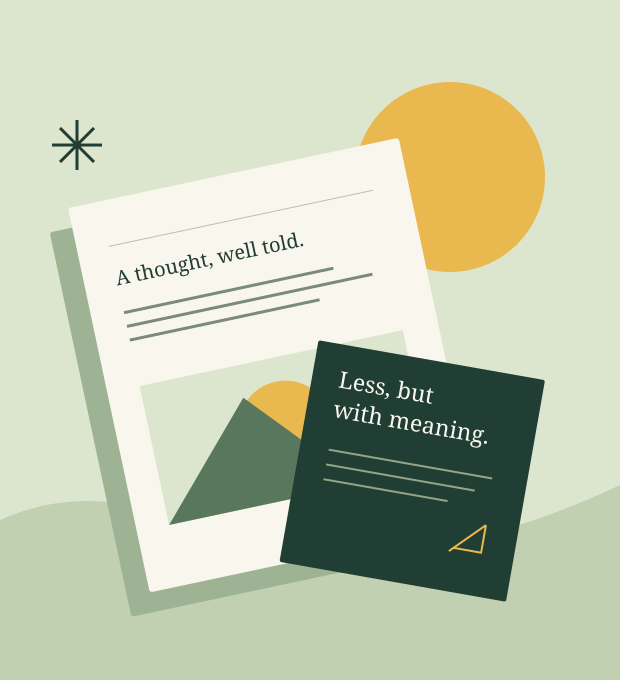

A sharper introduction
A focused message for the first page people see. Who you help, what you offer, and why it matters.
Website wordsAN INDEPENDENT EDITORIAL STUDIO — DEMO
Thoughtful words and a little room to breathe. Morrow is a fictional studio for businesses ready to explain what they do, simply.
Find your starting pointA considered voice. A useful structure. Nothing extra.

01 / WHAT WE DO
Three ways this fictional studio might help a small business find its voice.
A focused message for the first page people see. Who you help, what you offer, and why it matters.
Website wordsA practical set of language principles to keep your writing familiar, wherever your business shows up.
Voice & directionA simple narrative that connects the pieces: where you began, what you believe, and where you are going.
Brand narrative02 / A LITTLE LESS NOISE
The best starting point is not a blank page. It is a good question.
Look at the message, the audience, and the one thing a reader should understand.
Give the ideas a useful order. Keep what helps; question what does not.
Read it aloud, make the edges simpler, and leave room for the business to grow.
03 / THE POINT OF VIEW
In this imagined studio, good writing is not about sounding impressive. It is about making the right person feel understood.
This sample uses original fictional copy and artwork. There are no client logos, endorsements, credentials, or invented results.
A few useful answers04 / THE SMALL PRINT
No. It is a fictional business created to demonstrate an original static website. This is not a client project or an offer of editorial services.
No. There are no forms, bookings, payments, or contact collection. Buttons move to another section of this demonstration only.
Approved business copy, rights-cleared images, a clear page structure, and written agreement on scope. Hosting and deployment are separate from a static-file handover.
05 / A CLEARER START
This is a design demonstration, not a live enquiry page.
Revisit the approach